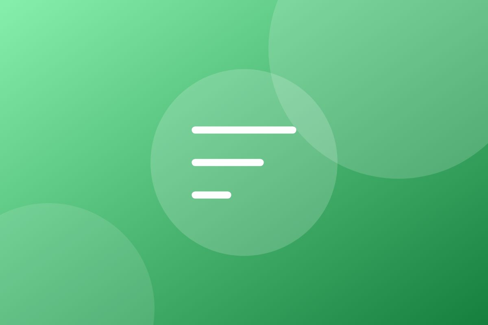
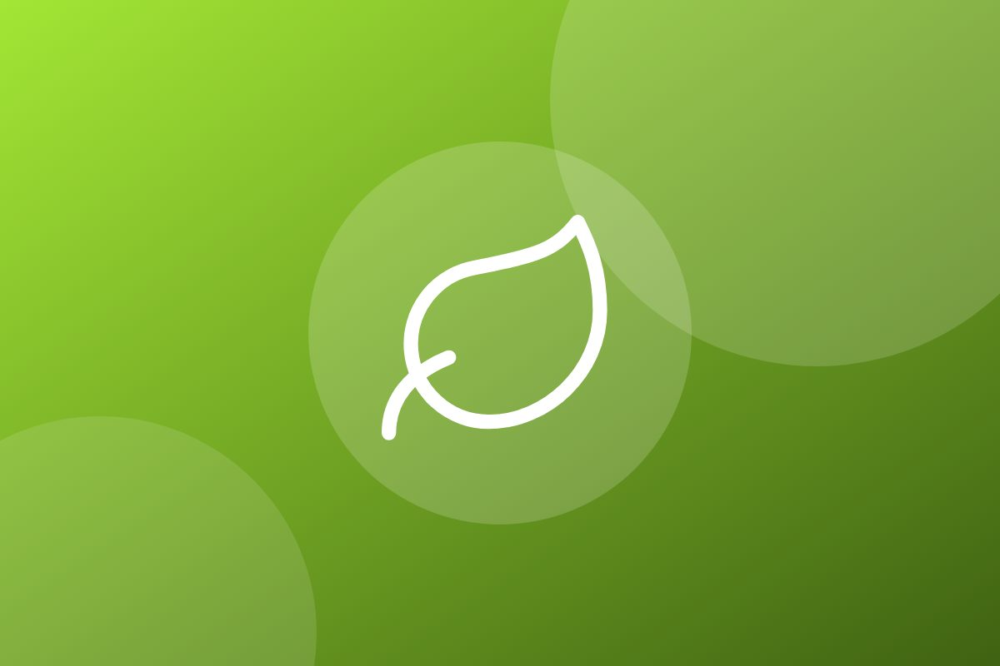
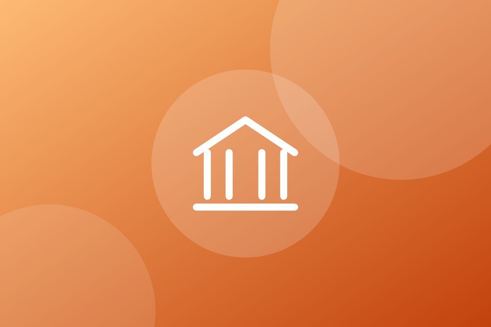

Pemilahan
Pisahkan sampah menjadi organik, anorganik, dan B3 sejak dari sumbernya. Sediakan minimal tiga wadah berbeda di rumah.
Panduan memilah, mengolah, dan menyetor sampah dengan benar dari rumah sampai bank sampah.
Organik: sisa makanan, kulit buah, daun, ranting.
Anorganik: plastik, kertas, kaca, logam.
B3: baterai, obat, cat, lampu, bahan kimia.

Pisahkan sampah menjadi organik, anorganik, dan B3 sejak dari sumbernya. Sediakan minimal tiga wadah berbeda di rumah.

Cegah sampah sejak awal: belanja secukupnya, tolak kemasan berlebih, dan pilih produk tahan lama.

Beri kehidupan kedua untuk botol, toples, dan kardus bekas sebelum dibuang.

Kirim plastik, kertas, kaca, dan logam bersih untuk diolah menjadi bahan baku baru.

Ubah sisa dapur dan daun kering menjadi pupuk kompos yang menyuburkan tanah.

Setor sampah anorganik terpilah, catat sebagai tabungan, dan dukung ekonomi sirkular di lingkungan kamu.